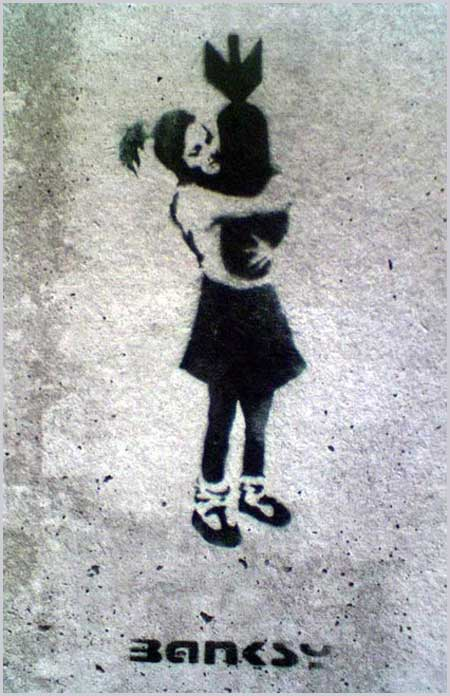

Credit
The picture of a young girl hugging a bomb to her chest is one of Banksy’s original creations back in 2003, where it was made on a wall in London’s East End. The piece symbolises the horror of warby being innocence and as young girl by having nothing to do with it as being good or evil. On a mural, In East London.
2003
Spray Paint
London, UK